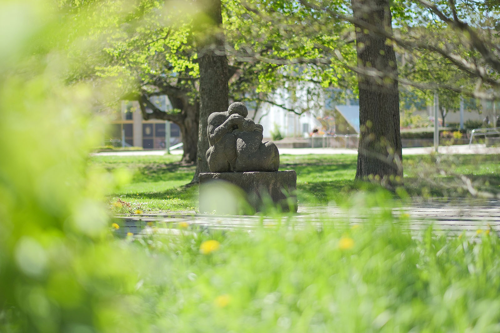
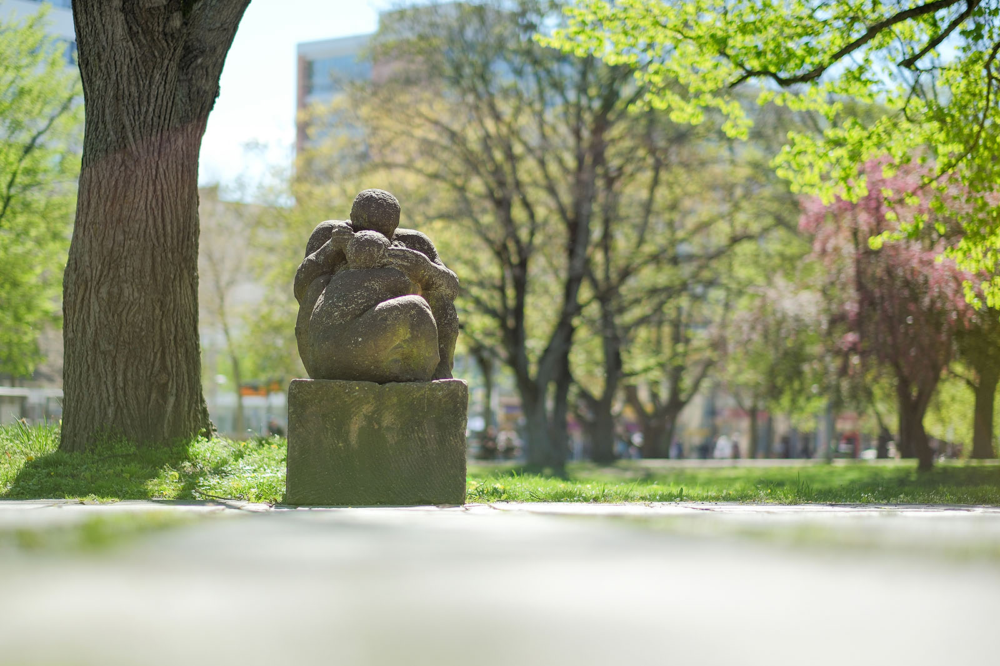
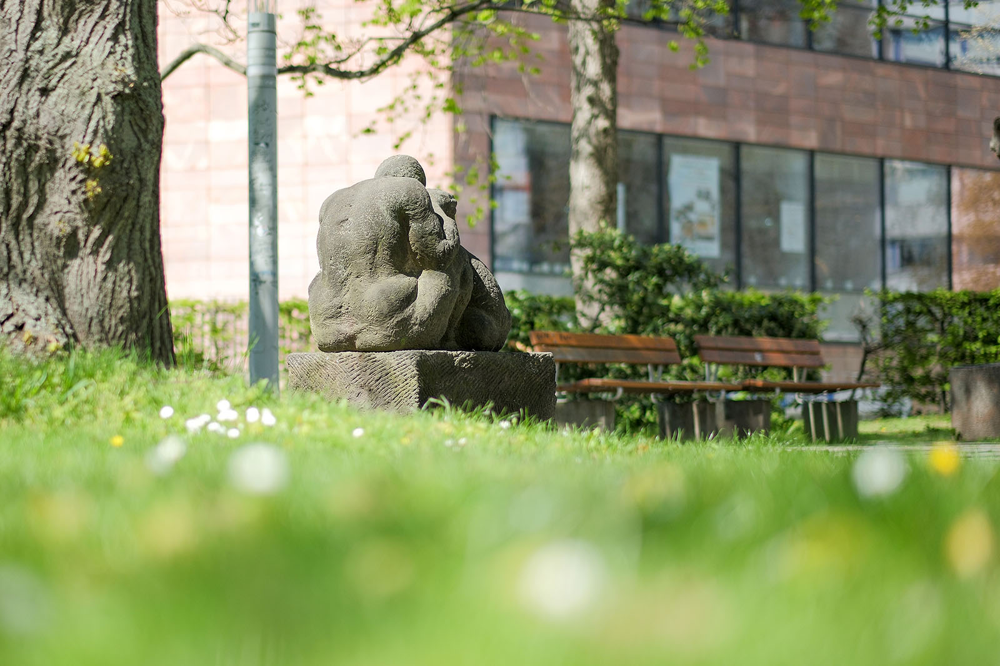
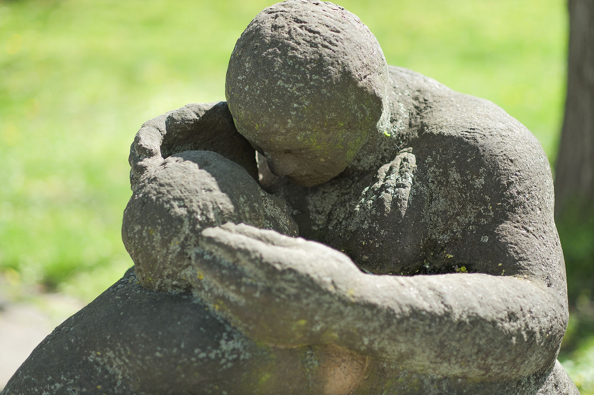
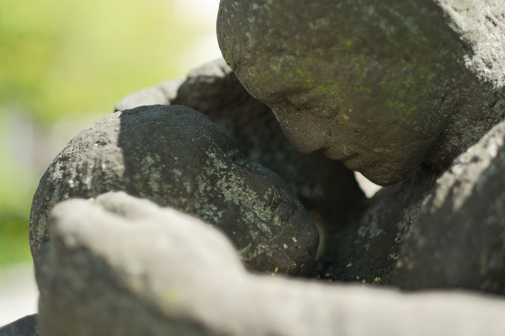
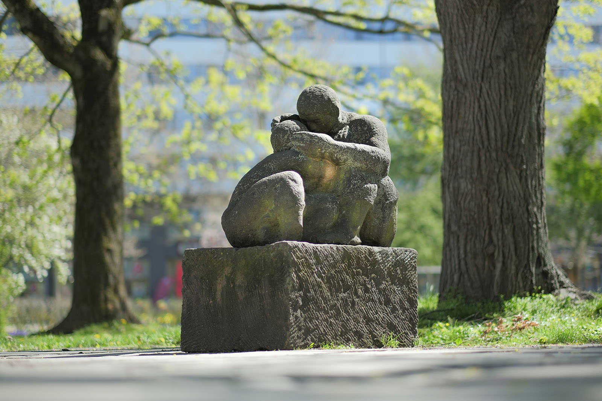

Recherche und Werkbeschreibung: Roman Pilz. Text und Fotografien wechseln sich wie in einem Magazin ab. Ein Klick auf ein Bild öffnet die Großansicht.
Die Plastik "Mutter und Kind" ist aus massivem, rötlichem Sandstein gehauen. Die rundplastisch gearbeiteten Figuren hocken eng ineinander verschlungen auf einem nur grob behauenen Quader aus demselben Material.
Das Werk verbindet Gegensätze zu einer einheitlichen Aussage: Hunzinger befreit aus dem groben, schweren Stein eine Szene von großer Zärtlichkeit. Die Mutter hält schützend ihre großen Hände um die Wangen des Kindes, das sich eng an ihren Schoß schmiegt. Mit ihren Händen wie Scheuklappen beschirmt sie seinen Blick und sein Gehör von der rauen Umwelt – und ist selbst ganz Ohr, lauscht dem Flüstern, möglicherweise dem Atem und dem Herzschlag.
Der Sandstein selbst ist, wie das Kind, der unerbittlichen Umwelt ausgesetzt, die ihn unvermeidlich altern lässt, weiter abrundet und auswäscht. Doch selbst Moos und Flechten können der Mutterliebe nichts anhaben.
Die Proportionen der Figuren sind teilweise stark akzentuiert – während die Körper und Gliedmaßen robust und stämmig wirken und auch das Kind im Vergleich zur Mutter schon relativ groß ist, so scheint besonders der Kopf des Kindes noch klein und zerbrechlich. Ein wenig fühlt man sich an noch nicht flügge Vogelkinder im Nest erinnert, deren große, teilweise noch ungefiederte Körper hilflos und unförmig der Sorge der Eltern überlassen sind.

Die Körper werden von Hunziger insgesamt nur sehr spärlich als körperhafte Volumen bearbeitet. Nur die Gesichter zeigen ein wenig mehr Detailtiefe, besonders bei der Mutter. Sie ist die Hauptfigur, die Beschützerin, die breitbeinig und muskulös auf dem Boden sitzt wie ein Fels. Barfuß, mit knappem Haaransatz und aufgekrempelten Hosenbeinen verbindet sie männliche und weibliche Charakteristika in einer Person.
Die Schlichtheit der Oberflächengestaltung erinnert an die archaische Formensprache ihres einflussreichen Lehrers Ludwig Kasper, wobei die Haltung und die Gestik des Figurenpaares viel freier und ausdrucksvoller gestaltet sind und an die Expressivität von Käthe Kollwitz oder Fritz Cremer denken lassen.

In Berlin ist eine frühere Figurengruppe von Hunzinger aus dem Jahr 1959 mit einem ganz ähnlichen Motiv ausgestellt. Im Auerpark in Friedrichshain steht eine "Mutter mit Kindern", die jedoch viel statischer und erhabener gearbeitet ist als die Arbeit im Chemnitzer Stadthallenpark. Aufrecht und ruhig, mit unnahbarem Lächeln mehr dem Betrachter als ihrem Säugling im Arm und der kleinen Tochter im Schoß zugewandt, thront sie dort zwar selbstbewusster, aber weniger innig auf ihrem Sockel.


